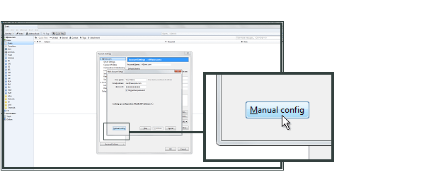

Thunderbird¶
Scegli Account Settings dal menu Tools.

Fai clic sul pulsante Add Mail Account nell’angolo inferiore sinistro della finestra.

Indica il tuo Name, Email Address (nome, il tuo indirizzo e-mail) e la tua password.
Your Name (Il tuo nome) sarà il nome visualizzato dalle persone che riceveranno i tuoi messaggi e-mail tramite Thunderbird.
Email Address (Il tuo indirizzo e-mail) è l’indirizzo e-mail creato nel tuo Pannello di controllo. Nell’esempio
mail@example.com, dove example.com corrisponde al dominio ospitato presso EWake.La password corrisponde alla password che hai selezionato per l’account e-mail nel Pannello di controllo.

Ora Thunderbird cerca le impostazioni per l’account e-mail. Fai clic su Stop, poi Manual Config per interrompere la configurazione automatica.
Per Incoming hostname inserisci imap.ewake.it e la porta 993. Seleziona SSL/TLS e Normal Password.
Per Outgoing (uscita) hostname inserisci smtp.ewake.it e la porta 465. Seleziona SSL e Normal Password.
Per Username (utente) inserisci il tuo indirizzo e-mail. Quindi fai clic su Create Account (creare account).

Cliccare OK per finire l’installazione.